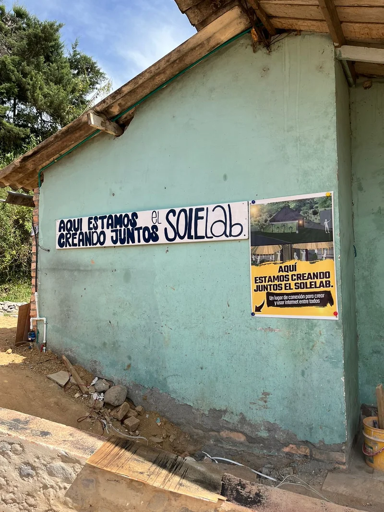

Hello! Manu here. Today I want to share with you some powerful techniques you can use to get your message to more people and generate a positive impact in your community.
What is spreading your message?
When it comes to spreading a message that we truly care about, we want to ensure it reaches as many people as possible, and that those people respond to our call.
In this solution, I share some strategies so you can test which medium is best suited to transmit your message.
What is it for?
Knowing how to best spread your message will allow you to reach your audience more efficiently. You will be able to reach a wider audience, one more specialized in what you want to tell them, and you will be able to inform, spread, and inspire… in the best way possible!
That others can appreciate the value and importance of what you say is related to the way you spread it, so if you want to ‘reach better’ and make more strategic decisions, it is necessary that
What do you need?
- Colored paper and/or cardstock.
- Colored pencils, markers, and felt-tip pens.
- Computer or smartphone → with Internet access to send messages via WhatsApp.
- Comfortable shoes to connect personally with the community.
- A good dose of enthusiasm and authenticity.
How to do it?
-
Moment 0: Define what you want to say and what you want your audience to do
To define your message in detail, you can review the solution Create a powerful message, where you can define exactly what you want to spread and what the purpose of your communication is.
Now, to know if your dissemination is powerful, you need to include a key aspect in your message: the call to action, or what is called in communication a Call To Action. It refers to the action you are asking the person to take once they have received your message, which will confirm to you that they have indeed received it.
For example, a call to action can be “sign up on the list below.” As soon as you see a series of names written down, you will know that your message has had good reach. In digital media, you can use reactions (emojis, comments) to know if people are seeing your content, or design some other way to get people to interact with you and confirm that your message has reached them.
-
Moment 1: First, what is your target audience? Who do you want to address?
It is necessary to think about your audience before deciding the channel you are going to use to transmit your message. You can adapt to different media; the important thing is that the message reaches the person you want to reach.
Keep in mind that if you have partnered with a place that gathers people (you can see the solution How to partner with places that gather people?), it may be that your ally already knows the people they know how to gather very well. If so, you can let yourself be advised by your ally and learn from their way of doing things!
If you are already clear about who you want to invite or gather with your message, a good tactic is to use the media most used by those people.
💡 For example, if your target audience is young people between 18 and 25 years old interested in technology, platforms like WhatsApp and other Social Networks could be effective channels to reach them.
Activity:
- Describe your target audience on a sheet of paper and ask yourself: what do the people you want to reach do? How old are they? What do they like to do?
- Draw the communication media that those people would normally use: do they use Social Networks? Do they read newspapers? Do they listen to community radio?
- Underline the winning media in the list.
Done! When you finish this exercise, you will know that the media listed on the sheet are the ones you should focus on to transmit your message.
- Moment 2: Second, define the channel. How are you going to reach them?
- Digital dissemination channels
WhatsApp, Instagram, email, Facebook, phone, it doesn’t matter which one it is. What matters is that they are accessible media for your audience, that is, the people you want to gather or reach.
In Colombia, WhatsApp is used a lot to send messages. I invite you to exploit all the resources it has: send voice notes, messages, photos, create a group, you can even create polls to decide what time is best for all your guests to participate.
Here is an example of what an invitation sent via WhatsApp could look like:
- Analog dissemination channels
Create posters and flyers
Post posters, flyers, and leaflets that convey your message in strategic places. Go to the places where your community gathers, such as local shops or community centers.
You can also knock on your neighbors’ doors and hand them the invitation in person.
Here I share some posters that we have put up in shops to invite the Boca de Camarones community to build The Library of the Future:

Go out to the street
Time to put on your most comfortable shoes and go out to conquer the community!
Go to the places where the people in your community, or their leaders, gather… Give yourself the opportunity to start talking to strangers, it’s your time to shine!
When you approach people, tell them why your activity is so important.
Listen carefully and show genuine interest in what they say. Establish authentic connections and make new friends while sharing your passion.
Every conversation is an opportunity to learn and make the impact of your activity greater!
- Moment 3: Seek help from others, unity is strength
By joining forces with others, we multiply our impact. Join your peers, your community leaders, your friends, and family who share your values and goals. Invite them to join in and infect them with your message so they can replicate it; this way, you ensure that your activity is on everyone’s lips.
Seek support from organizations, community radio stations, local media, schools, or community action boards committed to your cause or activity. Approach their spaces, share the importance of your activity, and the details of your call, such as dates and times, clearly. They will surely be able to help you replicate the call.
Remember, word-of-mouth dissemination is key to expanding your impact. Work as a team and make your message reach more people!
- Moment 4: Receive responses and evaluate the success of your campaign
Do you remember that we talked about the call to action earlier? That is, are the people you addressed the message to doing what you asked them to do? Bravo! Then you did manage to spread your message.
Evaluate the reception and impact of your message—everything counts! For example, the hearts given to your message on WhatsApp, the comments, or the messages you have received listening to the direct response of someone in your community.
How to know if this solution works?
It is important that you monitor the way your message reaches your audience. To know this, sometimes it is enough to ask what they thought, if it reached them with enough clarity, if they thought the way you executed the dissemination was relevant and sufficient.
There are some indicators with which you can evaluate the proper dissemination of a message:
- if you have been able to deliver it and someone has received it
- if any of the calls to action have had an effect
- if other people received the message, even if they were not the ones you initially addressed
- if you receive good comments
Why might this solution work?
If you are not receiving the responses you expect, or something in the dissemination seems not to be working well, it is time to review.
Make sure your message:
- has relevant content, focus on your audience (below you have some important considerations)
- is focused on a target audience
- is a message written with quality, check the grammar, spelling, and syntax, and ensure it is easy to understand
- that the way of sending it is aligned with your audience (time, day of the week, medium through which you spread it…)
- it is important to be respectful, both with people’s data and with the way and time in which we communicate things, keep that in mind
Communication is a living process; you can review it as many times as you want, and each time you will do it better. The more you practice, the better and more easily you will be able to create powerful messages and spread them more efficiently and powerfully.
Remember that together we can achieve great things!
Write to us at @sole_colombia and, if you need it, we will help you get more reach on Social Networks.
Dare to share your initiatives! Make your message reach everyone in the community!
Related solutions
- How to reach the people who will value your message the most? →
- How to partner with places that gather people? →
- How to write a good invitation? →
Remember that in Voltaje ⚡⚡ you can find many more solutions to connect without fear of using the internet as a group. Go ahead and keep browsing! See more solutions →